S01 / 00:00-01:00 / Orientation
Ano ang kayang sagutin ng DTS
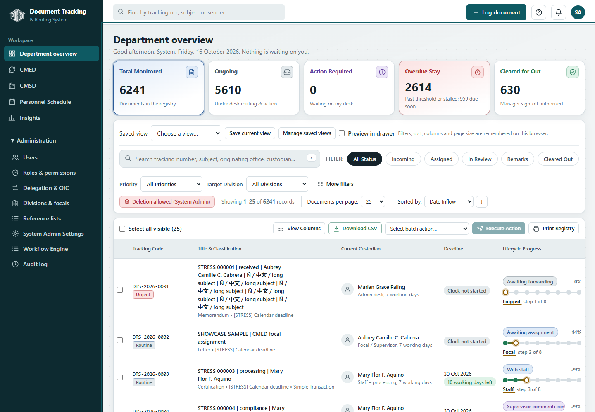
S01 · REFERENCE STILL AND PLANNED EDITORIAL OVERLAYNasaan na ang document at sino ang kikilos
Ano ang kayang sagutin ng DTSPresenter#/dashboard
Caption area · lower 17 percent · do not place essential controls here
- S01-1 Show the actual Department overview; hold a sample tracking number in an editorial callout.
- S01-2 Highlight current desk, deadline and status on one sample record.
- S01-3 Show the chapter roadmap; keep the same document identifier through the lifecycle scenes.
Use a clearly labelled demonstration record. Do not invent a reduced processing time or savings figure.
Taglish narration and matching cues
S01-1 Kapag may nagtanong kung nasaan na ang isang document, ano ang una nating ginagawa? Hinahanap ba natin ang huling message, tumatawag sa ibang desk, o chine-check ang isang listahang hindi na updated?
S01-2 Sa Document Tracking and Routing System, may isang record na susundan natin mula pagtanggap, assignment, processing at review, hanggang clearance at release. Makikita kung kanino ang current action at ano ang susunod na hakbang.
S01-3 Sa demo na ito, actual screens at sample records ang gagamitin natin. Ipapakita rin ang regular reports, personnel schedules, monitoring tools at administrative controls na sumusuporta sa araw-araw na trabaho.
S02 / 01:00-02:00 / Orientation
Sino ang gumagamit at ano ang responsibilidad
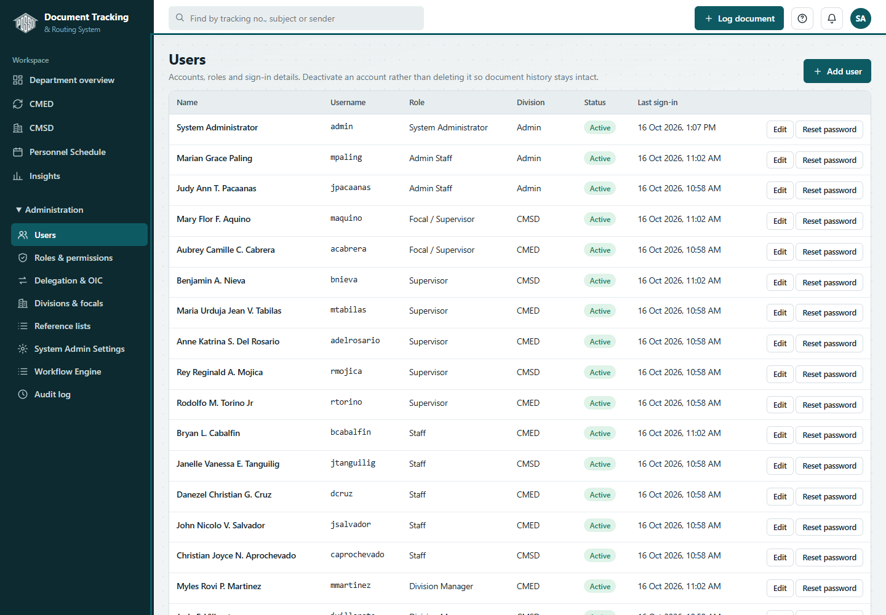
S02 · REFERENCE STILL AND PLANNED EDITORIAL OVERLAYTamang account para sa tamang action
Sino ang gumagamit at ano ang responsibilidadPresenter and role cast#/users
Caption area · lower 17 percent · do not place essential controls here
- S02-1 Show seven role labels around the document; use verified enrolled names only in the cast panel.
- S02-2 Trace the ordinary sequence Admin Staff to Focal to Staff to reviewers.
- S02-3 Separate System Administrator from the operational chain.
Permissions and desk responsibility both matter. A configured focal also receives focal abilities even when their base role differs.
Taglish narration and matching cues
S02-1 May magkakaibang responsibilidad ang bawat account. Ang Admin Staff ang nagla-log, nagfo-forward at nagre-record ng release. Ang Focal ang nag-aassign. Ang Staff ang nagpoproseso at nagsusumite ng output.
S02-2 Ang Supervisor at Division Manager ang nagre-review sa kani-kanilang bahagi. Ang Department Manager ang nasa final review at clearance, kasama ang mga applicable acting at OIC rules.
S02-3 Ang System Administrator naman ang namamahala sa accounts, permissions at configuration. Hindi ito ang regular processing account at wala itong My work queue. Gagamit tayo ng tamang enrolled account sa bawat operational step.
S03 / 02:00-03:00 / Orientation
Sign in at personal workspace
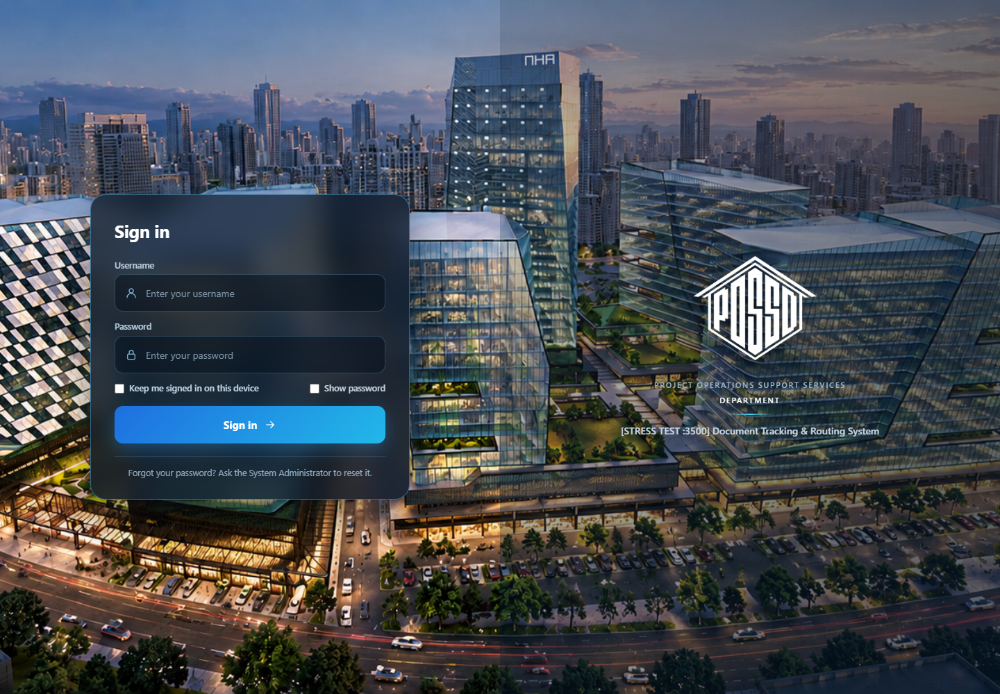
S03 · REFERENCE STILL AND PLANNED EDITORIAL OVERLAYSariling account at malinaw na workspace
Sign in at personal workspaceAny enrolled staff account/
Caption area · lower 17 percent · do not place essential controls here
- S03-1 Capture splash to sign-in; type the approved demo account with password masked.
- S03-2 Cut to staff My work, then a manager overview from a separate browser context.
- S03-3 Open the account menu and show theme choices and sign-out location.
Use a fresh test profile. Do not publish the stress password or initial-credentials file.
Taglish narration and matching cues
S03-1 Mag-sign in gamit ang sariling approved account. Kung temporary password ang ibinigay sa first use, sundin ang prompt para palitan ito. Huwag gumamit ng shared administrator account para sa normal na processing.
S03-2 Pagkapasok, ang Staff ay karaniwang dadalhin sa My work. Ang administrators at managers ay sa Department overview. Kung may binuksang direct document link, puwedeng iyon ang unang destination.
S03-3 Sa account menu, makikita ang personal options gaya ng password change, theme at sign out. Puwedeng pumili ng light, dark o automatic theme. Takpan ang password habang nire-record at huwag isama ang actual credentials sa final video.
S04 / 03:00-04:00 / Orientation
Pagkilala sa navigation at My work
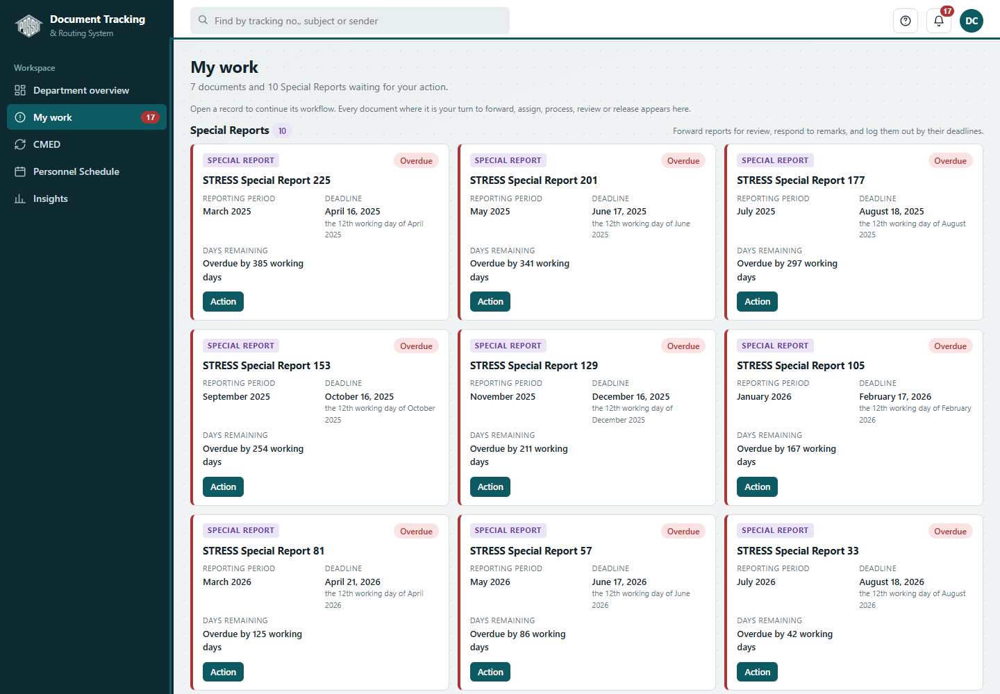
S04 · REFERENCE STILL AND PLANNED EDITORIAL OVERLAYUnahin ang records na naghihintay sa iyo
Pagkilala sa navigation at My workStaff and administrator comparison#/action
Caption area · lower 17 percent · do not place essential controls here
- S04-1 Pan through visible sidebar groups in the staff account.
- S04-2 Open My work; point to an ordinary document and a Special Report action card.
- S04-3 Show the bell and a staged update from another account; allow time for refresh.
Open dialogs and unsaved forms can defer refresh. Keep the demonstration free of unsaved edits.
Taglish narration and matching cues
S04-1 Ang sidebar ang mapa ng application. Nandito ang Department overview, My work kapag applicable, CMED, CMSD, Personnel Schedule, Insights at mga administration pages na pinapayagan sa account.
S04-2 Sa My work, makikita ang ordinary documents at Special Reports na nangangailangan ng action mula sa naka-sign-in na user. Ang bilang sa queue ay para makatulong sa pag-prioritize, kaya tingnan din ang deadline at current stage.
S04-3 May in-app action indicator at bell para sa pending work. Ang ibang pagbabago ay lumalabas sa live refresh, karaniwang sa loob ng humigit-kumulang fifteen seconds. Ipakita ang actual queue; huwag ilarawan itong email o text-message notification service.
S05 / 04:00-05:00 / Finding work
Department overview at paghahanap ng records
 S05 · REFERENCE STILL AND PLANNED EDITORIAL OVERLAY
S05 · REFERENCE STILL AND PLANNED EDITORIAL OVERLAYHanapin at i-filter bago mag-follow up
Department overview at paghahanap ng recordsAdmin Staff or manager#/dashboard
Caption area · lower 17 percent · do not place essential controls here
- S05-1 Click total, ongoing and Overdue Stay tiles on the populated registry.
- S05-2 Search the hero record; show More filters, sorting, columns and page controls.
- S05-3 Save a named view and reopen it; point to the distinct delay labels.
Saved views and registry preferences are per account and browser. Avoid claiming that they sync across devices.
Taglish narration and matching cues
S05-1 Sa Department overview, puwedeng makita ang monitored documents, ongoing work, action required, Overdue Stay at cleared records. Ang mga tile ay filters na puwedeng piliin para mas mapaliit ang listahan.
S05-2 Mag-search gamit ang tracking number, subject o originating office. Pagkatapos, gamitin ang division, priority at available advanced filters, saka ang sorting at pagination. Puwede ring pumili ng columns at mag-save ng sariling view.
S05-3 Tandaan na ang Overdue Stay ay kasama ang overdue deadlines at applicable stalled desk records. Hindi lahat ng nandito ay pare-pareho ang dahilan ng delay. Buksan ang record para makita kung deadline ba o desk stay ang kailangang aksiyunan.
S06 / 05:00-06:00 / Finding work
Preview at pagbabasa ng document details
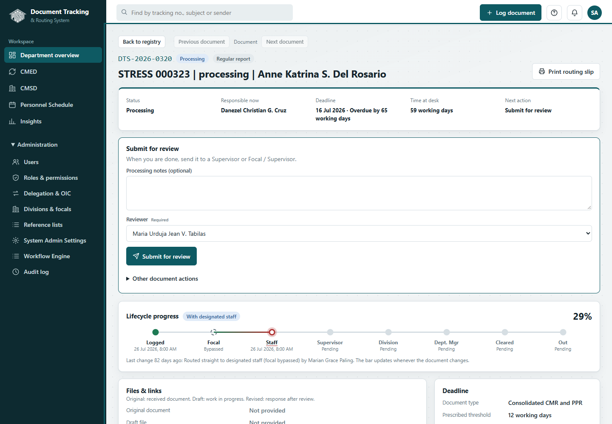
S06 · REFERENCE STILL AND PLANNED EDITORIAL OVERLAYStatus at current desk muna bago mag-action
Preview at pagbabasa ng document detailsAny signed-in user with applicable actions#/dashboard then #/doc/{id}
Caption area · lower 17 percent · do not place essential controls here
- S06-1 Enable drawer preview and open the hero record from the registry.
- S06-2 Highlight summary fields, then Open full document.
- S06-3 Scroll to files, comments and history; return to the current action panel.
Some details are broadly viewable; an available view does not grant permission to perform every action.
Taglish narration and matching cues
S06-1 Kung gusto munang sumilip nang hindi iniiwan ang listahan, gamitin ang Preview in drawer. Makikita ang key details at available actions, at puwedeng lumipat sa previous o next record sa kasalukuyang queue.
S06-2 Sa full document page, unahin ang status, responsible desk, deadline, desk age at next action. Nasa record din ang source, document type, division, priority at iba pang registration details.
S06-3 Sa ibaba, tingnan ang Files and links, review comments at movement history. Ang history ang magpapakita kung ano ang nangyari at sino ang gumawa ng action. Kapag may tanong sa progress, dito tayo bumabalik sa halip na manghula mula sa title lang.
S07 / 06:00-07:00 / Document lifecycle
Pag-log ng bagong document
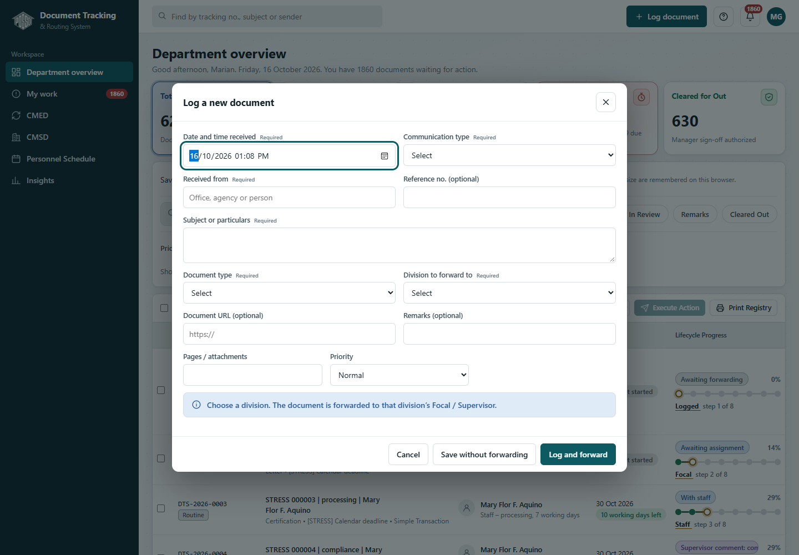
S07 · REFERENCE STILL AND PLANNED EDITORIAL OVERLAYMaayos na registration ang simula ng tracking
Pag-log ng bagong documentMarian Grace Paling / Admin StaffNew document form
Caption area · lower 17 percent · do not place essential controls here
- S07-1 Open New document as mpaling; enter a synthetic letter with a meaningful subject.
- S07-2 Fill current active references and a safe demonstration file URL; show one required-field validation.
- S07-3 Save without forwarding; show received status, generated tracking number and unstarted clock.
Hero record: DEMO Site inspection coordination request, CMED. Urgent is a label, not a separate automatic deadline rule.
Taglish narration and matching cues
S07-1 Magsimula tayo sa bagong ordinary document. Ilagay ang date received, communication type, received from, reference number at malinaw na subject. Piliin ang document type at target division, saka ang Normal o Urgent priority.
S07-2 Kung may original document sa approved file storage, ilagay ang complete web link. Puwede ring maglagay ng pages at remarks. I-review muna ang details bago i-save; tutulungan ng validation na mahuli ang kulang o invalid na input.
S07-3 May choice na i-save muna sa Admin desk o i-forward kung handa na. May generated tracking number ang record. Para sa ordinary assignment-based processing, ang simpleng registration pa lang ay hindi pa pagsisimula ng processing clock.
S08 / 07:00-08:00 / Document lifecycle
Forwarding at assignment ng Focal
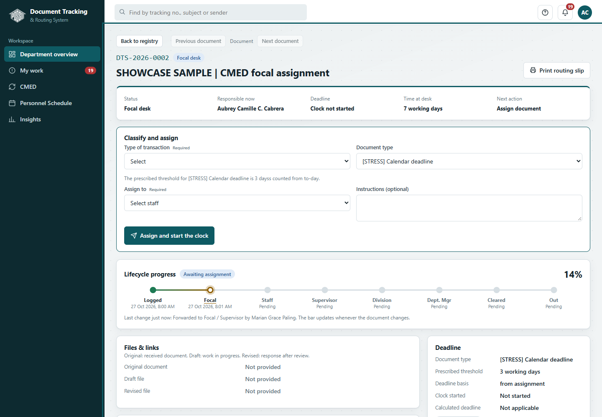
S08 · REFERENCE STILL AND PLANNED EDITORIAL OVERLAYAssignment ang simula ng applicable processing clock
Forwarding at assignment ng FocalAdmin Staff then Aubrey Camille C Cabrera / Focal#/doc/{id}
Caption area · lower 17 percent · do not place essential controls here
- S08-1 Forward the hero record as mpaling; show at_focal in history.
- S08-2 Switch to acabrera and assign to dcruz using an appropriate active transaction type.
- S08-3 Point to processing status, assignee, clock start and computed deadline.
Use the current configured threshold. Record exact account switches as separate takes; do not make one shared admin account impersonate the whole chain.
Taglish narration and matching cues
S08-1 Kapag kumpleto na ang intake details, i-forward ang ordinary document sa configured division focal. Magbabago ang current desk at status, at magkakaroon ng bagong movement entry.
S08-2 Sa Focal account, piliin ang transaction type, i-confirm ang document type at italaga ang active staff na magpoproseso. Sa example natin, si Danezel Christian Cruz ang assignee. Dito nagsisimula ang applicable assignment-based clock.
S08-3 Ang due date ay galing sa configured rules. May transactions na nangangailangan ng special date kapag walang prescribed document-type deadline. Ang For information only ay para sa eligible focal assignment. Sundin ang available options sa actual form, hindi isang memorized na fixed deadline.
S09 / 08:00-09:00 / Document lifecycle
Pag-unawa sa deadlines at desk limits
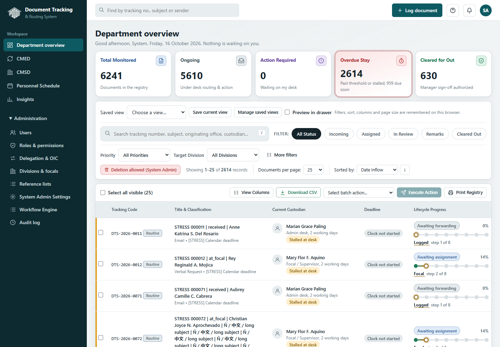
S09 · REFERENCE STILL AND PLANNED EDITORIAL OVERLAYDeadline at desk stay ay magkaibang sukatan
Pag-unawa sa deadlines at desk limitsPresenter and Focal#/doc/{id} and Reference lists
Caption area · lower 17 percent · do not place essential controls here
- S09-1 Compare labelled examples: unstarted, no deadline, on time, due soon, due today and overdue.
- S09-2 Show a document-type basis and the Holidays reference tab without changing production values.
- S09-3 Contrast deadline age with current-desk age using two populated test records.
Use visible dates from the recording day. Label examples rather than promising a particular due date for every document.
Taglish narration and matching cues
S09-1 Hindi iisang deadline ang para sa lahat. Puwedeng prescribed working days, calendar days, o reporting-period basis ang document type. May transaction-based deadline din kapag iyon ang applicable fallback.
S09-2 Sa working-day calculations, may epekto ang weekends at configured holidays. Iba rin ang due soon, due today at overdue. Kapag walang applicable deadline, ipapakita iyon nang hiwalay sa record na hindi pa nagsisimula ang clock.
S09-3 Bukod sa document deadline, may Admin at Focal desk limits para makita ang sobrang tagal sa isang desk. Kaya mahalagang basahin ang label at context. Ang Urgent priority ay hindi automatic na nagpapalit sa deadline rule.
S10 / 09:00-10:00 / Document lifecycle
Staff processing at Files and links
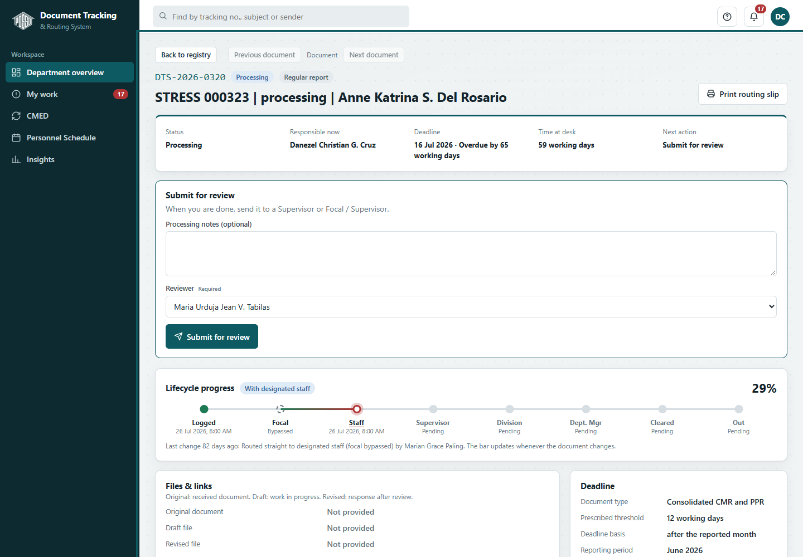
S10 · REFERENCE STILL AND PLANNED EDITORIAL OVERLAYIhanda ang output at isumite sa tamang reviewer
Staff processing at Files and linksDanezel Christian G Cruz / Staff#/action then #/doc/{id}
Caption area · lower 17 percent · do not place essential controls here
- S10-1 Sign in as dcruz and open the hero record from My work.
- S10-2 Save a draft link; point out original, draft and revised link sections.
- S10-3 Submit to mtabilas and show the supervisor-review status.
A link change and revision counter are not historical file-version storage. Opening external previews depends on the linked service and browser rules.
Taglish narration and matching cues
S10-1 Sa Staff account, lalabas sa My work ang assigned document. Buksan ito at i-check ang instructions, deadline at source bago gumawa ng output. Ang DTS ang tracking record ng trabaho at review history.
S10-2 Sa Files and links, puwedeng ilagay ang original, draft at revised file links ayon sa authority ng user. Ang actual files ay nasa linked storage. Hindi ito direct file upload o isang built-in document editor.
S10-3 Kapag handa na ang draft, i-submit para sa review at piliin ang tamang eligible reviewer. Sa example, ang supervisor ni Cruz ay si Maria Urduja Jean Tabilas. Maglagay ng maikling context para mas malinaw kung ano ang kailangang tingnan ng reviewer.
S11 / 10:00-11:00 / Document lifecycle
Review comments at compliance cycle
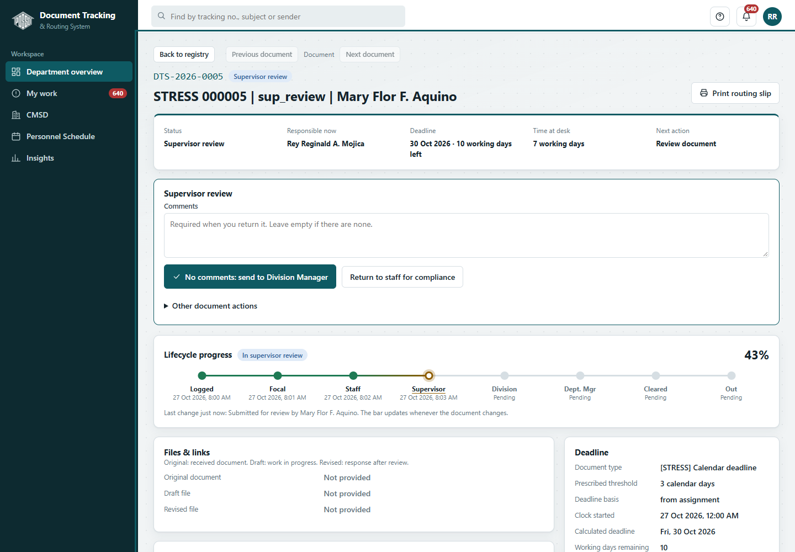
S11 · REFERENCE STILL AND PLANNED EDITORIAL OVERLAYMalinaw na comments at dokumentadong compliance
Review comments at compliance cycleSupervisor then assigned Staff#/doc/{id}
Caption area · lower 17 percent · do not place essential controls here
- S11-1 As mtabilas, return the hero document with one specific supporting-checklist comment.
- S11-2 As dcruz, add a revised link and a concrete compliance response.
- S11-3 Resubmit; show resolved comments, cycle count and the configured returning stage.
Resubmission resolves outstanding review comments together; do not imply individual per-comment resolution buttons.
Taglish narration and matching cues
S11-1 Sa Supervisor account, may dalawang karaniwang resulta: puwedeng i-approve ang draft o ibalik sa staff para sa compliance. Kapag ibabalik, ilagay ang malinaw at actionable na comments.
S11-2 Makikita ng assigned Staff ang comments sa record. Gawin ang correction, i-update ang revised file link kung kailangan, at ilarawan kung paano na-address ang request bago mag-resubmit.
S11-3 Naiiwan sa record ang compliance cycle at history. Ang resubmission behavior ay nakadepende sa configured policy, halimbawa kung babalik sa returning reviewer o magsisimula muli sa supervisor review. Sa demo, ipakita ang actual destination pagkatapos mag-submit.
S12 / 11:00-12:00 / Document lifecycle
Division review at clearance
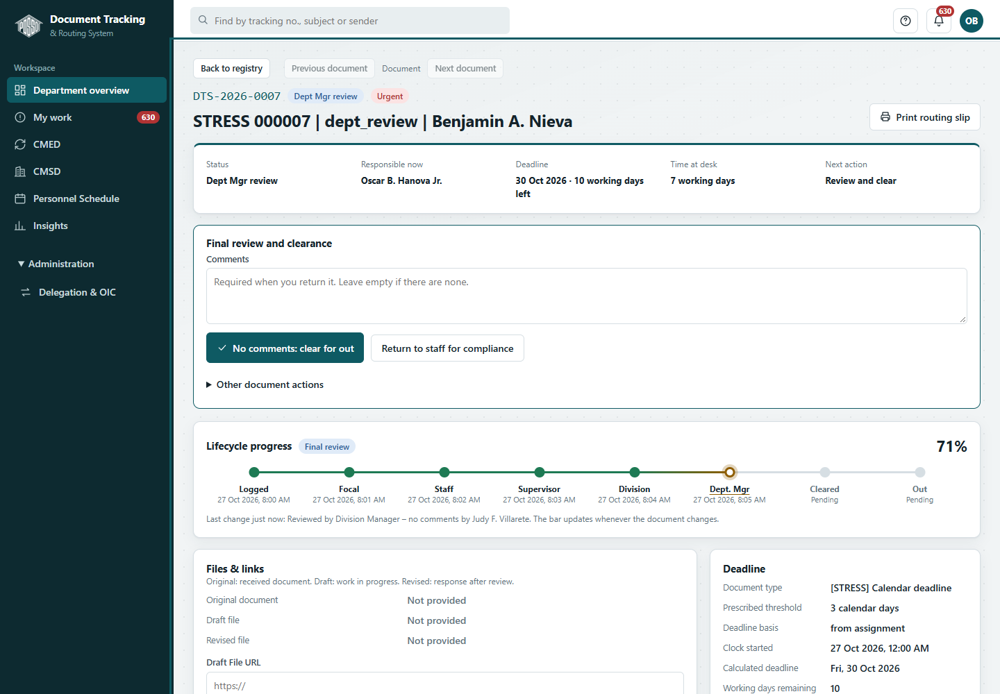
S12 · REFERENCE STILL AND PLANNED EDITORIAL OVERLAYCleared for Out ay hiwalay sa release
Division review at clearanceSupervisor then Division Manager then Department Manager#/doc/{id}
Caption area · lower 17 percent · do not place essential controls here
- S12-1 Approve as mtabilas, then approve as mmartinez; show each status transition.
- S12-2 Clear as ohanova and hold the Cleared for Out state.
- S12-3 Compare clearance timestamp with the still-empty release fields.
The live engine includes authorized early-clear/override cases. Present the standard sequence without claiming every review step is universally mandatory.
Taglish narration and matching cues
S12-1 Kapag maayos na ang output, itutuloy ng Supervisor ang document sa Division Manager. Mula roon, mapupunta ito sa Department review para sa final assessment at clearance.
S12-2 Puwede pa ring may return for compliance sa applicable review stage. Kung cleared na, i-record ang clearance gamit ang tamang authorized account. Sa ordinary example natin, si Myles Martinez ang CMED Division Manager at si Oscar Hanova ang Department Manager.
S12-3 Mahalagang distinction ito: ang Cleared for Out ay hindi pa ang actual release. Humihinto ang applicable processing clock sa clearance, pero may hiwalay pang log-out step para ma-record kung kailan at kanino inilabas ang document.
S13 / 12:00-13:00 / Document lifecycle
Reassignment at return to sender
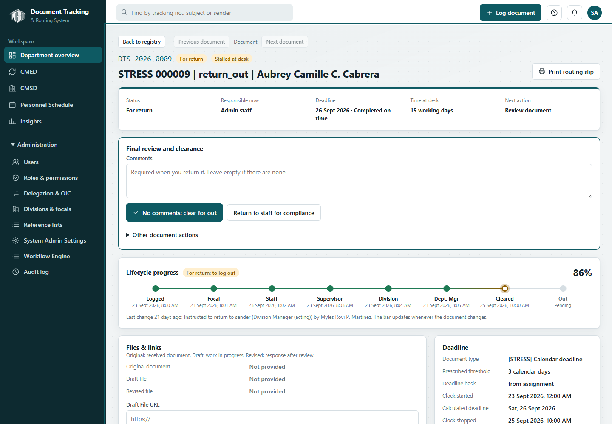
S13 · REFERENCE STILL AND PLANNED EDITORIAL OVERLAYMagkaiba ang compliance at return to sender
Reassignment at return to senderFocal or eligible manager and Admin Staff#/doc/{alternate-id}
Caption area · lower 17 percent · do not place essential controls here
- S13-1 Use a separate processing record to reassign between two current eligible staff.
- S13-2 Use another allowed record to enter an authorized return-to-sender instruction with a reason.
- S13-3 Show return_out and its Admin release step beside the compliance example.
Show manager/override labels if used. Do not claim that reassignment always requires a reason field or resets the deadline.
Taglish narration and matching cues
S13-1 May mga pagkakataong kailangang ilipat ang processing sa ibang eligible staff. Sa allowed stage at account, gamitin ang reassignment at maglagay ng context. Mananatili ang movement history ng naging responsibility.
S13-2 Iba naman ang return for compliance sa instruction na ibalik ang document sa sender. Sa return-to-sender path, maglalagay ang authorized reviewer ng reason at mapupunta ang document sa For return na naghihintay ng Admin log out.
S13-3 Gumamit tayo ng hiwalay na sample para hindi mawala ang main example. Tingnan ang status, reason at next responsible desk bago magpatuloy. Walang generic cancel o reopen button na dapat ipakita bilang kasalukuyang feature.
S14 / 13:00-14:00 / Document lifecycle
Actual release at routing slip
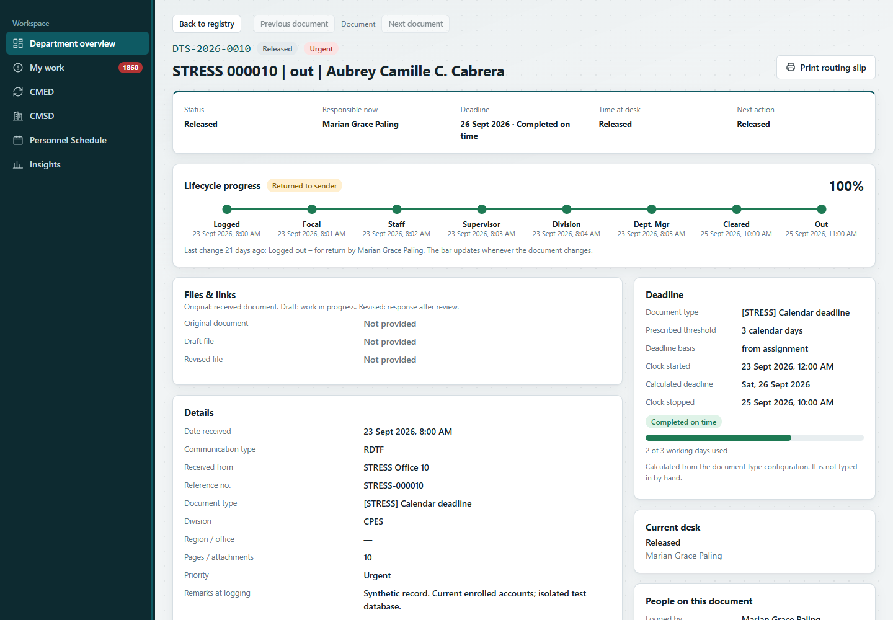
S14 · REFERENCE STILL AND PLANNED EDITORIAL OVERLAYRelease na may petsa recipient at history
Actual release at routing slipAdmin Staff#/doc/{id} and registry batch controls
Caption area · lower 17 percent · do not place essential controls here
- S14-1 Log out the hero record individually as mpaling with a specific demonstration destination.
- S14-2 Open its movement history and print routing slip preview.
- S14-3 Show batch controls on separate eligible test records and read the confirmation without deleting records.
Bulk deletion is administrator-controlled and optional to explain verbally; never demonstrate it against real records.
Taglish narration and matching cues
S14-1 Bumalik tayo sa cleared document. Sa Admin Staff account, ilagay kung kanino ito ire-release at ang applicable remarks. Kapag na-log out, may release timestamp, releasing user at destination na ang record.
S14-2 Mananatiling searchable ang released document. Makikita pa rin ang registration details, comments at movement history. Puwede ring mag-print ng routing slip para sa record ng naging proseso.
S14-3 May selected-record tools para sa print at CSV, at may eligible batch forwarding at log out. Basahin ang confirmation dahil may records na puwedeng ma-skip. Ang batch log out ay gumagamit ng original sender bilang recipient at current time, kaya individual release ang gamitin kapag iba-iba ang actual destination.
S15 / 14:00-15:00 / Reports
Consolidated CMR and PPR
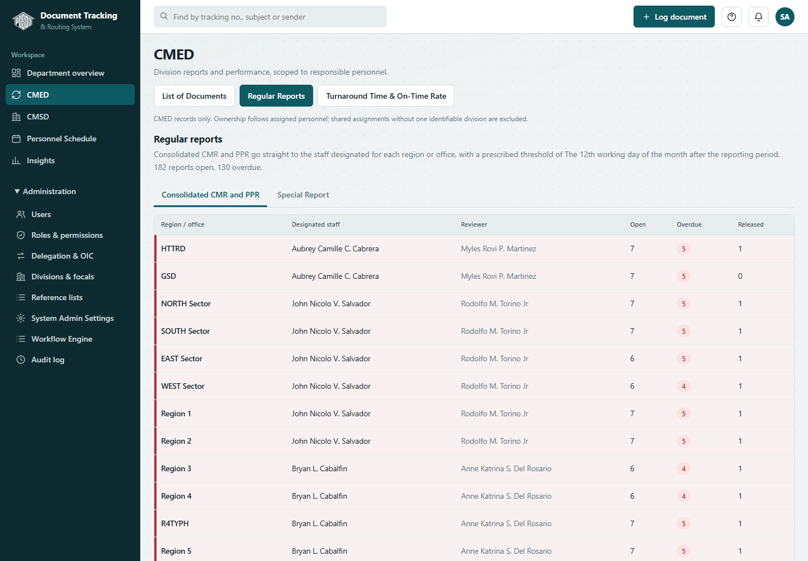
S15 · REFERENCE STILL AND PLANNED EDITORIAL OVERLAYReporting period at designation ang gabay
Consolidated CMR and PPRAdmin Staff and designated regional staff#/cmed/regular
Caption area · lower 17 percent · do not place essential controls here
- S15-1 Open CMED Regular Reports and the consolidated-report tab.
- S15-2 Create a sample for a configured region and reporting month; show designated staff and automatic routing.
- S15-3 Highlight the computed deadline and a region drilldown.
Confirm the current prescribed threshold before filming; do not narrate the default six days as an immutable rule.
Taglish narration and matching cues
S15-1 May espesyal na registration flow ang Consolidated CMR and PPR. Pipiliin ang region o office at reporting period, dahil ang responsibility ay galing sa configured report designation.
S15-2 Kapag na-log ang reporting-period document, dumidiretso ito sa designated active staff at nilalampasan ang ordinary focal-assignment step. Ang division para sa bagong record ay galing sa configured assignee kapag identifiable ang division niya.
S15-3 Ang deadline ay kino-compute mula sa document-type rule para sa reporting period. Ang starting rule para sa consolidated report ay sixth working day ng kasunod na buwan, pero puwedeng baguhin ng administrator ang configuration. Sa Regular Reports, makikita ang regions at status ng kanilang submissions.
S16 / 15:00-16:00 / Reports
CMED at CMSD reporting views
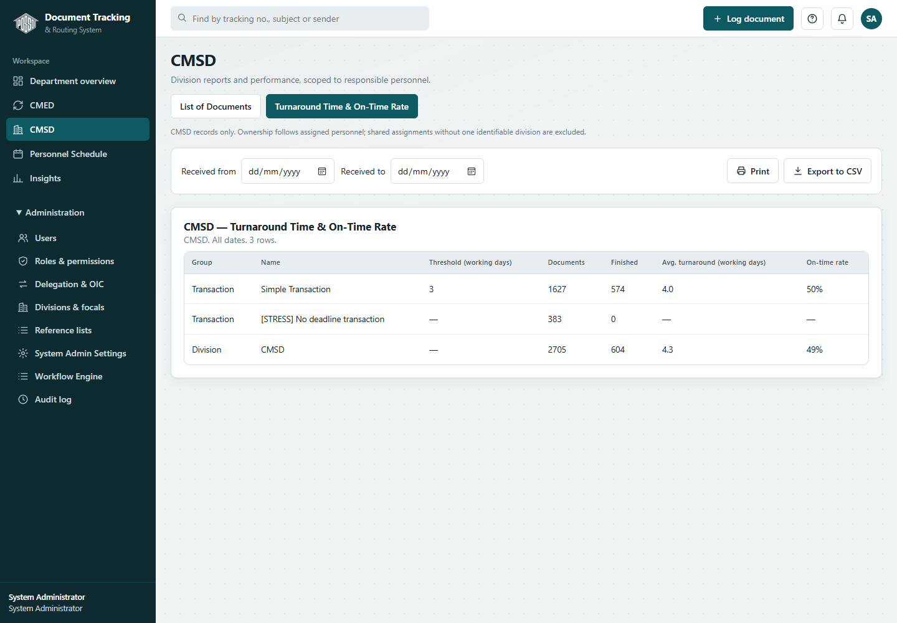
S16 · REFERENCE STILL AND PLANNED EDITORIAL OVERLAYDivision reports ayon sa responsible personnel
CMED at CMSD reporting viewsAuthorized division user or department account#/cmed and #/cmsd/performance
Caption area · lower 17 percent · do not place essential controls here
- S16-1 Open CMED List of Documents, then CMED Regular Reports.
- S16-2 Open CMSD and show its document list and performance tab; do not add a CMSD Regular Reports tab.
- S16-3 Show a permitted account and a denied direct division route in separate takes.
This is reporting scope, not blanket record confidentiality. Keep this qualification in the spoken script.
Taglish narration and matching cues
S16-1 May magkahiwalay na destination ang CMED at CMSD. Ang default ay List of Documents. Sa CMED, may Regular Reports din; ang available performance tab ay Turnaround Time and On-Time Rate para sa account na may report permission.
S16-2 Ang reporting ownership ay sumusunod sa responsible personnel. Kaya mahalaga ang tamang assignment at division ng user. Ang shared report na walang isang identifiable division ay hindi isinasama sa individual division metrics.
S16-3 Ang division access ay chine-check din ng server. Pero hindi nito ibig sabihin na confidential na ang lahat ng underlying documents sa Department overview. Ihiwalay natin ang access sa division destination, permission na mag-action, at policy sa pagtingin ng basic records.
S17 / 16:00-17:00 / Reports
Pag-configure ng Special Reports
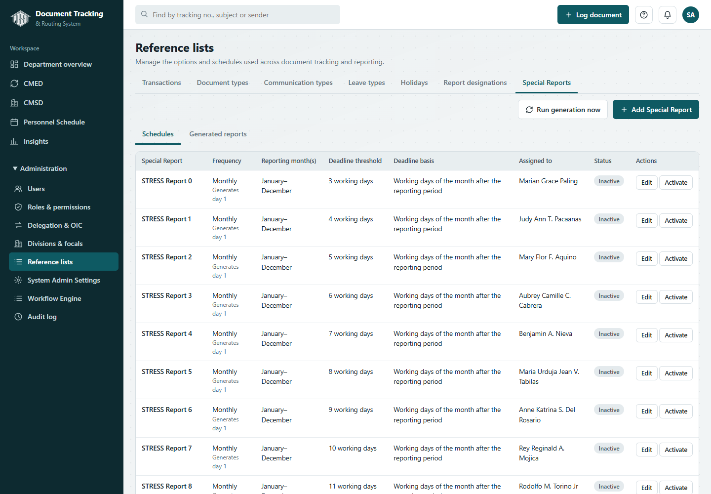
S17 · REFERENCE STILL AND PLANNED EDITORIAL OVERLAYRecurring reports na may malinaw na schedule
Pag-configure ng Special ReportsAdministrator with configuration permissionReference lists > Special Reports
Caption area · lower 17 percent · do not place essential controls here
- S17-1 Open Reference lists, Special Reports, Schedules.
- S17-2 Show monthly, quarterly, specific-month and annual choices, generation day and working-day threshold.
- S17-3 Assign current staff on a disposable schedule and show the active-state validation.
Do not activate or change real recurring schedules while recording. Search supports enrolled names, roles and divisions.
Taglish narration and matching cues
S17-1 Para sa recurring obligations, may Special Reports schedules. Sa Reference lists, puwedeng itakda ang report name, frequency, reporting months, generation day, deadline threshold at responsible people o division focals.
S17-2 Available ang monthly, quarterly, specific months at annual schedules. Ang generation ay para sa reporting period na natapos, at ang configured generation day ay nasa kasunod na buwan. Ipakita natin ang isang malinaw na monthly example.
S17-3 Dapat may eligible responsible person bago i-activate ang schedule. Ang initial starter schedules ay inactive at unassigned. Hindi sapat na may report name lang; kailangang kumpleto ang configuration at responsibility para makabuo ng tamang assignment.
S18 / 17:00-18:00 / Reports
Generated Special Reports at review workflow
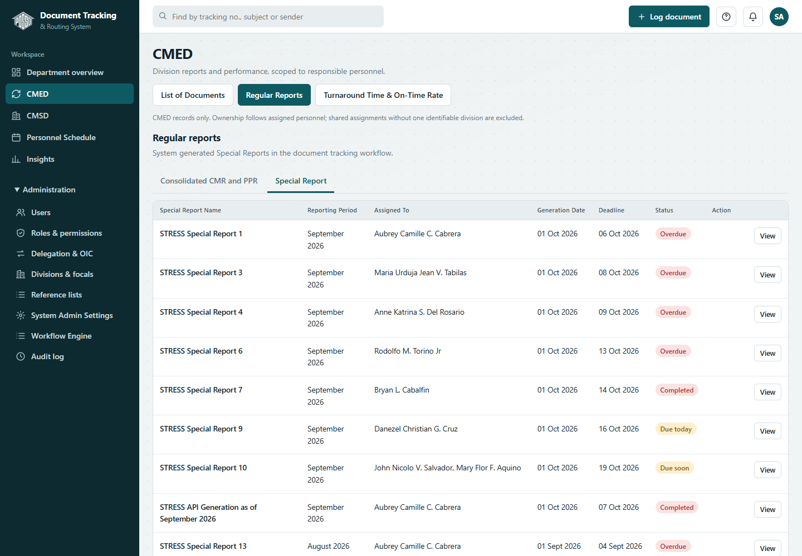
S18 · REFERENCE STILL AND PLANNED EDITORIAL OVERLAYAuto generation ay simula ng obligation
Generated Special Reports at review workflowAssigned staff and reviewersCMED Regular Reports > Special Report / My work
Caption area · lower 17 percent · do not place essential controls here
- S18-1 Show an existing generated report with period, deadline and responsible staff.
- S18-2 Open it from My work; demonstrate one submission and compliance example.
- S18-3 Show generated-report assignment history and a released report in reporting.
Do not claim automatic Drive folders, email delivery or Personnel Schedule events. The generator uses configured working-day deadlines.
Taglish narration and matching cues
S18-1 Kapag due na ang schedule, ang server ang gumagawa ng report at assignment. Chine-check ito sa startup at periodically; may catch-up para sa missed generation dates at may protection laban sa duplicate obligation para sa parehong schedule at period.
S18-2 Sa assigned staff account, lalabas ang report sa My work. Dadaan ito sa submission, review, possible compliance, clearance at log out. Nananatili ang assignment history kahit may allowed reassignment bago pumasok sa review.
S18-3 May Special Report tab sa regular reporting area at kasama ang generated records sa relevant monitoring. Ang generation ay hindi automatic submission ng report content. Ang staff pa rin ang kailangang gumawa ng output at kumpletuhin ang review process.
S19 / 18:00-19:00 / Scheduling
Personnel Schedule para sa availability
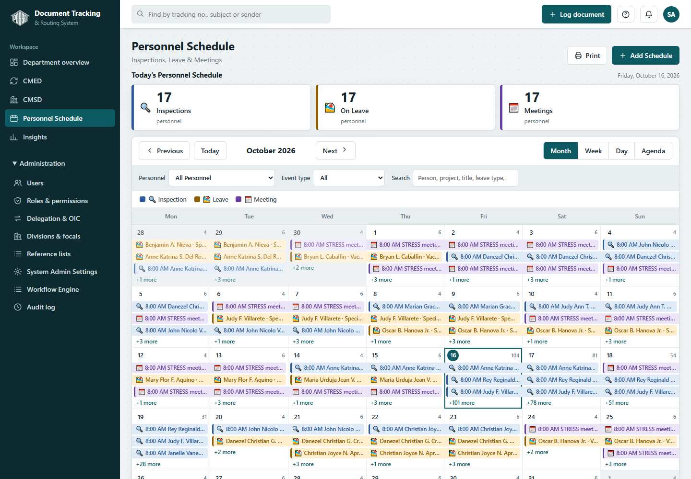
S19 · REFERENCE STILL AND PLANNED EDITORIAL OVERLAYI-check ang availability at conflicts
Personnel Schedule para sa availabilityViewer then user with schedule management permission#/schedule
Caption area · lower 17 percent · do not place essential controls here
- S19-1 Show all four calendar views and a personnel filter.
- S19-2 Create one test inspection, leave entry and meeting; show shared participants.
- S19-3 Trigger an overlap warning, explain confirmation, then show the saved schedule details.
Inspection project is free text with suggestions from prior entries, not a separate project-management module. No automatic leave-to-OIC linkage.
Taglish narration and matching cues
S19-1 Bukod sa documents, may Personnel Schedule para sa inspections, leave at meetings. Ang personnel ay mula rin sa enrolled user accounts, kaya hindi na kailangan ng hiwalay na pangalanan ulit ang parehong staff.
S19-2 May Month, Week, Day at Agenda views. Puwedeng mag-filter at tingnan ang date range at mga taong kasali. Ang pag-add, edit at delete ay para sa account na may schedule-management permission.
S19-3 Kapag may overlapping activity para sa parehong tao, may conflict warning. Puwedeng i-review ng authorized user at i-confirm ang Save anyway. Ang leave ay whole-day availability; hindi nito automatic na pinapalitan ang OIC o document assignee.
S20 / 19:00-20:00 / Monitoring
Analytics at tamang pagbasa ng metrics
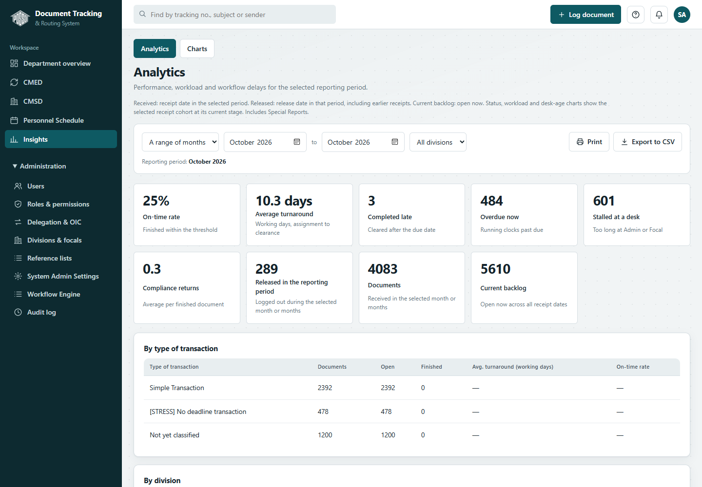
S20 · REFERENCE STILL AND PLANNED EDITORIAL OVERLAYBasahin ang date basis bago mag-compare
Analytics at tamang pagbasa ng metricsUser with report permission#/analytics
Caption area · lower 17 percent · do not place essential controls here
- S20-1 Open Analytics and set a visible month range and division.
- S20-2 Highlight the receipt, release and current-backlog KPI notes.
- S20-3 Point to turnaround and on-time labels, then staff/document/transaction breakdown tables.
Finished metrics can include records with a stopped clock at clearance. Retain the distinction from final release.
Taglish narration and matching cues
S20-1 Sa Insights, buksan ang Analytics at piliin ang reporting period at division. Makikita ang document volume, open at finished work, on-time rate, average turnaround at supporting breakdowns.
S20-2 May kahulugan ang bawat date basis. Ang receipt cohort ay batay sa date received. Ang released-in-period ay batay sa release date, kahit mas maaga natanggap ang document. Ang current backlog ay open records ngayon mula sa lahat ng receipt dates.
S20-3 Ang turnaround na ipinapakita ay working days mula assignment hanggang clearance, hindi simpleng receipt-to-dispatch time. Basahin din ang cohort at threshold bago mag-compare ng staff o division. Hindi natin tatawaging productivity score ang isang number na walang context.
S21 / 20:00-21:00 / Monitoring
Charts at drilldown sa actual records
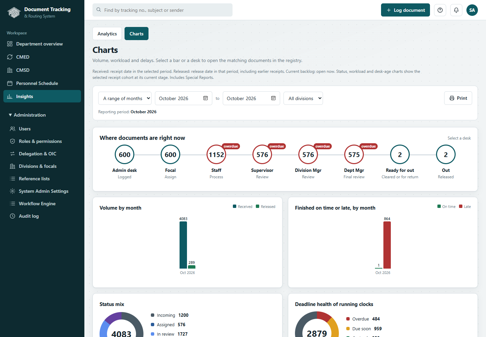
S21 · REFERENCE STILL AND PLANNED EDITORIAL OVERLAYMula summary papunta sa matching documents
Charts at drilldown sa actual recordsUser with report permission#/graphs
Caption area · lower 17 percent · do not place essential controls here
- S21-1 Show monthly volume, status mix, deadline health and staff workload.
- S21-2 Click an age band or desk and inspect the filtered registry.
- S21-3 Open one matching document, then return to the selected chart context.
Some charts show the selected receipt cohort while release totals use release dates. Keep visible period labels in every capture.
Taglish narration and matching cues
S21-1 Sa Charts, mas madaling makita ang volume by month, received at released records, finished on time o late, status mix at deadline health. May view rin ng workload at time sa current desk.
S21-2 Kapag may malaking overdue o desk-age group, puwedeng piliin ang applicable chart bar o desk para buksan ang matching registry records. Nananatili ang relevant reporting filters para may malinaw na koneksiyon ang chart at underlying list.
S21-3 Gamitin natin ang drilldown para mag-verify. Hindi sapat ang mataas na bar lang; tingnan kung anong documents ang nasa likod nito, sino ang current assignee, at anong action ang kailangan. Mas nagiging specific ang follow-up kapag record-level na ang usapan.
S22 / 21:00-22:00 / Monitoring
Print CSV at selected outputs
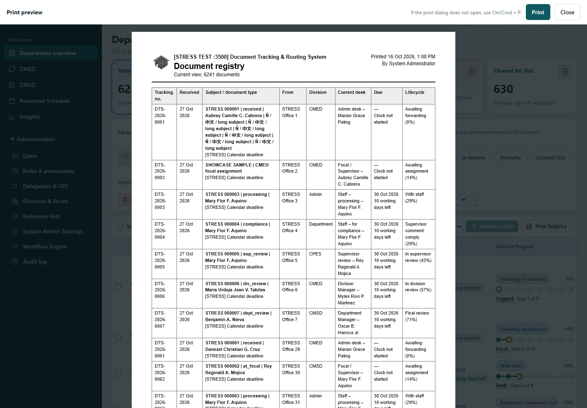
S22 · REFERENCE STILL AND PLANNED EDITORIAL OVERLAYI-verify ang scope bago mag-share
Print CSV at selected outputsUser with print and export permissionRegistry / Analytics / Charts / Audit
Caption area · lower 17 percent · do not place essential controls here
- S22-1 Filter the registry and export a CSV; verify headers, count and scope.
- S22-2 Show a routing slip, analytics print preview and a division-performance export.
- S22-3 Show chart print and audit output controls only under authorized accounts.
A printable chart page may depend on browser print settings. Do not portray exports as automatic scheduled distribution.
Taglish narration and matching cues
S22-1 Kung kailangan ng offline copy o supporting list para sa meeting, may print at CSV tools sa relevant pages. Sa registry, puwedeng current filtered records o selected records ang output, depende sa kasalukuyang selection.
S22-2 May routing slip para sa document history, registry printout, analytics summary, division performance output at chart printing. I-check ang heading, period, division at record count bago mag-print o mag-share.
S22-3 Ang exported CSV ay para sa spreadsheet analysis; hindi ito CSV import feature. Kapag may selection, siguraduhing iyon talaga ang gustong i-export. Ipakita natin ang preview at file contents para makita na tugma ang output sa scope na pinili.
S23 / 22:00-23:00 / Administration
Users roles at division focals
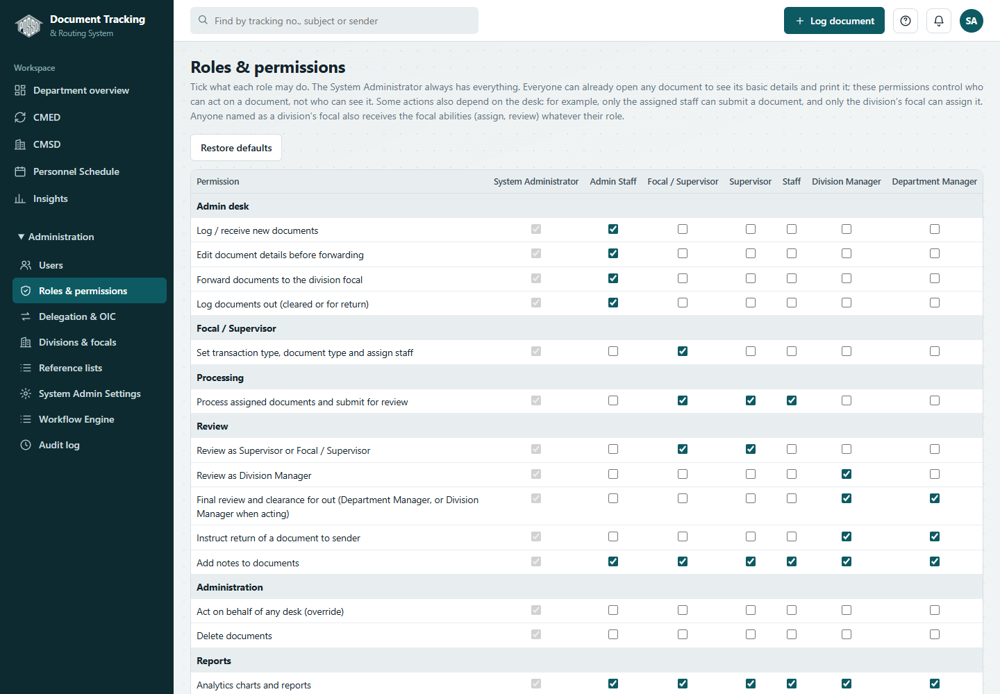
S23 · REFERENCE STILL AND PLANNED EDITORIAL OVERLAYConfiguration na nakaaapekto sa actual work
Users roles at division focalsSystem Administrator#/users > #/roles > #/divisions
Caption area · lower 17 percent · do not place essential controls here
- S23-1 Open the current 18-account roster; highlight role/division/active columns.
- S23-2 Show the permission matrix without changing real permissions.
- S23-3 Open Divisions and focals and show the current CMED/CMSD focal mappings.
Explain account deactivation and reset verbally or in an isolated copy. General viewing policy is distinct from action permissions.
Taglish narration and matching cues
S23-1 Sa Users, makikita ang enrolled accounts, role, division, active state at last sign-in information. Ang administrator ang may control sa account creation, maintenance at password reset ayon sa available permissions.
S23-2 Sa Roles and permissions, nakikita kung anong actions ang pinapayagan sa bawat role. May desk conditions pa rin: halimbawa, assignment para sa tamang focal at submission para sa assigned staff. Ang System Administrator ay may broad administrative authority.
S23-3 Sa Divisions and focals, itinatakda kung sino ang receiving focal ng bawat division. Hindi dapat basta i-deactivate ang configured focal nang walang kapalit. Ang changes sa role at assignment ay dapat sinasadya, dahil nakaaapekto ang mga ito sa queues, routing at reporting ownership.
S24 / 23:00-24:00 / Administration
Delegation presence at OIC
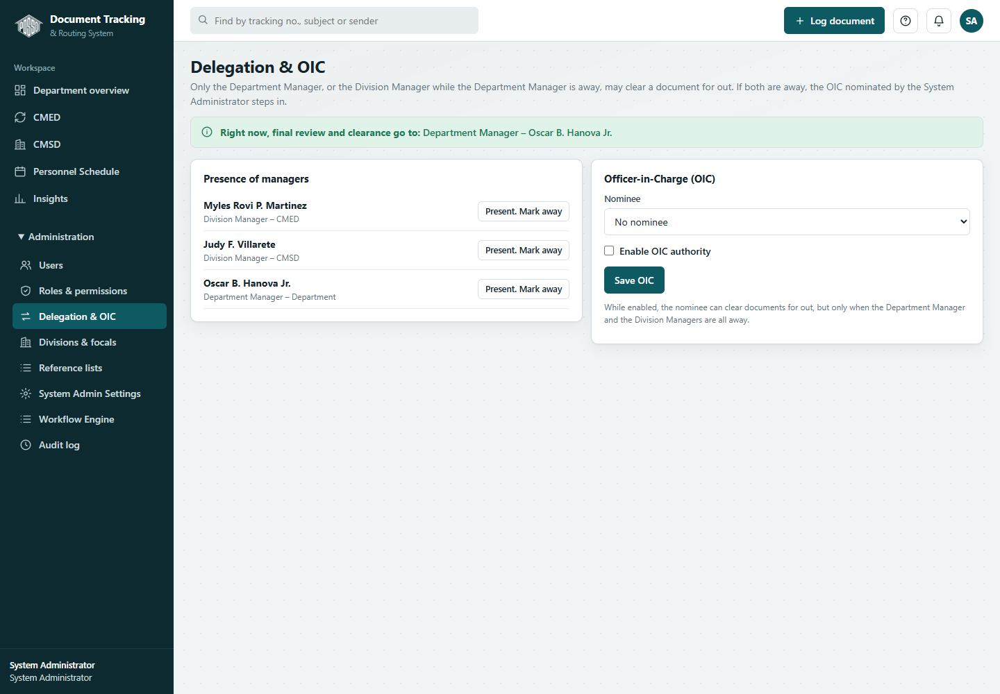
S24 · REFERENCE STILL AND PLANNED EDITORIAL OVERLAYMalinaw na authority kapag may absent
Delegation presence at OICManager and authorized OIC administrator#/delegation
Caption area · lower 17 percent · do not place essential controls here
- S24-1 Show the current final-review responsibility banner.
- S24-2 On a disposable copy, demonstrate present/away states and OIC nomination/enable controls.
- S24-3 Restore original test presence/OIC settings and point back to the applicable document action.
Avoid claiming that all clearance is universally blocked whenever a manager is away; existing authorized exceptions must remain explicit.
Taglish narration and matching cues
S24-1 Kapag wala ang usual approving manager, may Delegation and OIC page para makita ang configured availability at final-review responsibility. Nandito ang manager presence at nominated OIC.
S24-2 Ang resolver ay tumitingin sa present Department Manager, applicable Division Managers at enabled eligible OIC ayon sa current rules. May authorized clearance paths din sa operational engine, kaya sundin ang actual account permissions at action panel.
S24-3 Manually maintained ang manager presence at OIC setup. Hindi ito automatic na ine-enable dahil lang may leave entry sa Personnel Schedule, at walang automatic delegation-expiry workflow na dapat i-assume. Sa demo, ibalik ang test configuration pagkatapos ipakita ang fallback.
S25 / 24:00-25:00 / Administration
Reference lists at business rules
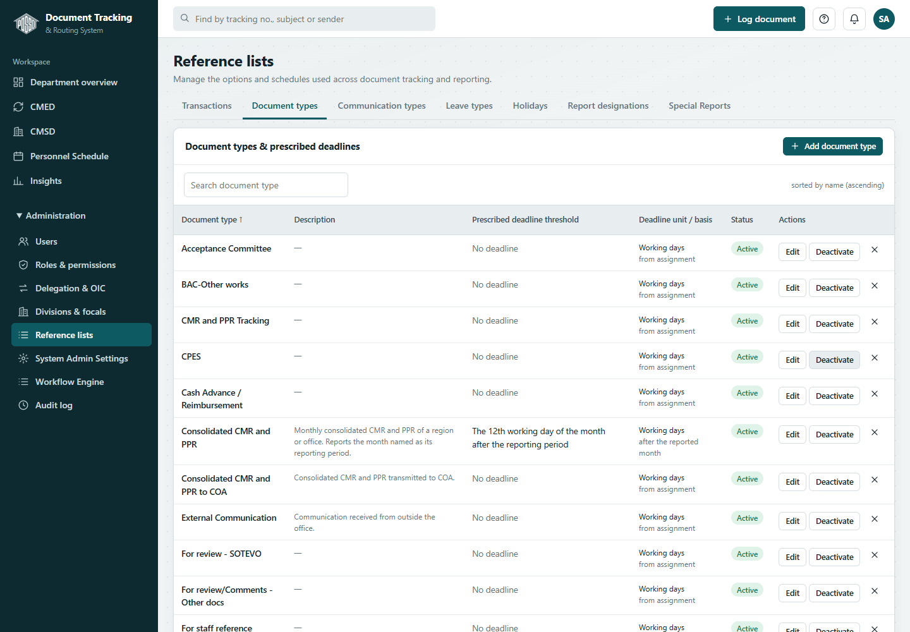
S25 · REFERENCE STILL AND PLANNED EDITORIAL OVERLAYDito nanggagaling ang maraming operational rules
Reference lists at business rulesUser with configuration permission#/refs
Caption area · lower 17 percent · do not place essential controls here
- S25-1 Walk through all seven Reference list tabs with their actual labels.
- S25-2 Open a document-type dialog; highlight threshold, basis, unit and active state.
- S25-3 Show Holidays and Report designations, then a protected used-reference example on the test copy.
Do not delete historical references for cosmetic cleanup. Changes generally govern subsequent computation/generation rather than rewriting all historical workflow records.
Taglish narration and matching cues
S25-1 Sa Reference lists nakalagay ang options at rules na paulit-ulit ginagamit sa system. Kasama ang Transactions, Document types, Communication types, Leave types, Holidays, Report designations at Special Reports.
S25-2 Sa document types, puwedeng i-configure ang prescribed threshold, unit at deadline basis. Sa report designations, itinatakda ang responsible staff ng bawat region o office. Sa holidays, nakasalalay ang working-day calculations.
S25-3 Ang active o inactive na state ay mahalaga para sa bagong entries at historical records. May dependency checks sa ilang ginagamit nang references. Bago magbago ng business rule, i-review ang epekto at sundin ang authorized configuration process.
S26 / 25:00-26:00 / Administration
Settings at everyday usability
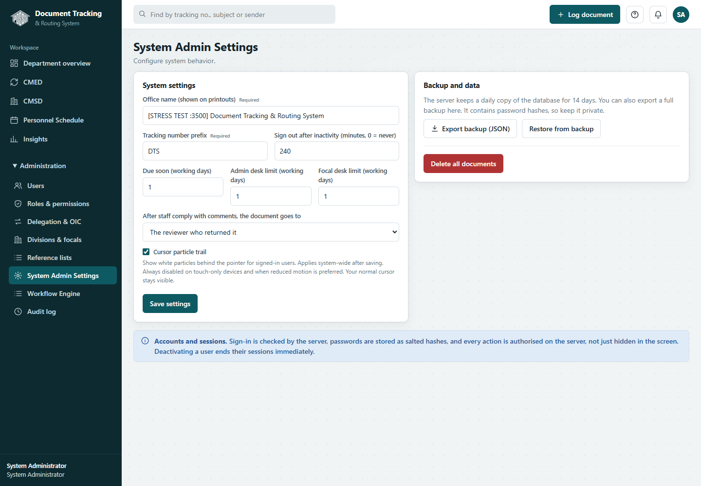
S26 · REFERENCE STILL AND PLANNED EDITORIAL OVERLAYMas malinaw na feedback sa araw-araw na use
Settings at everyday usabilityAdministrator and ordinary staff comparison#/settings and account menu
Caption area · lower 17 percent · do not place essential controls here
- S26-1 Show each settings field without changing the live configuration.
- S26-2 Open keyboard shortcuts; show an unsaved-change prompt on a disposable form.
- S26-3 Show light/dark theme and reduced-motion-friendly cursor settings briefly.
Keep cursor effects subtle in the recording. Do not claim a formal accessibility certification.
Taglish narration and matching cues
S26-1 Sa System Admin Settings, may office name, tracking prefix, inactivity timeout, due-soon threshold, desk limits, resubmission policy at cursor particle trail. Ang mga ito ay system behavior settings na kailangang i-review bago i-save.
S26-2 Sa ordinary use, may keyboard shortcuts, responsive tables, clear saving feedback at protection kapag may unsaved changes. May focus handling sa dialogs para mas maayos ang keyboard navigation.
S26-3 Puwedeng itoggle ang decorative cursor effect, at may respect ito sa reduced-motion preference. Ang theme at saved registry preferences ay browser-level conveniences. Ang system settings naman ay server-saved at lumalabas sa ibang users sa normal refresh cycle.
S27 / 26:00-27:00 / Administration
Audit log para sa traceability
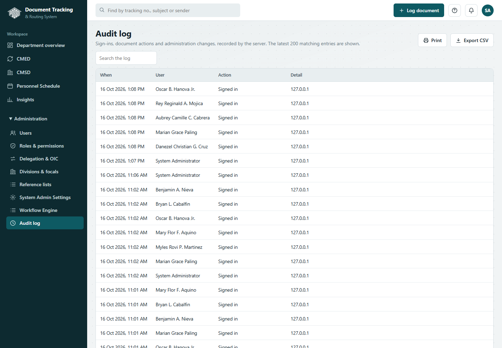
S27 · REFERENCE STILL AND PLANNED EDITORIAL OVERLAYDocument history at system activity may sariling view
Audit log para sa traceabilityUser with audit permission#/audit
Caption area · lower 17 percent · do not place essential controls here
- S27-1 Search the audit log using the hero tracking number or a distinctive action detail.
- S27-2 Point to timestamp, user, action and detail columns.
- S27-3 Compare one audit action with the hero document movement entry; show export permission.
Current audit query searches a recent server-side window and displays up to 200 matches. Use current visible labels rather than claiming unlimited audit retention.
Taglish narration and matching cues
S27-1 Bukod sa movement history ng isang document, may Audit log para sa system activity. Kasama rito ang sign-ins, document actions at administrative changes na nire-record ng server.
S27-2 Puwedeng mag-search ng relevant entries at gumamit ng available print o export controls. Ang screen ay nagpapakita ng latest matching entries sa supported limit; hindi ito unlimited full-history search sa bawat lumang event.
S27-3 Para sa isang concern, magsimula sa document history, saka i-correlate sa audit entry kung kailangan. May user, time, action at detail para mas madaling ma-review ang nangyari. Hindi natin ilalarawan itong tamper-proof compliance certification o legal electronic-signature system.
S28 / 27:00-28:00 / Administration
Backup restore at recovery
 S28 · REFERENCE STILL AND PLANNED EDITORIAL OVERLAY
S28 · REFERENCE STILL AND PLANNED EDITORIAL OVERLAYBackup ay kailangan ding ma-verify
Backup restore at recoveryAdministrator with data permission#/settings > Settings and data
Caption area · lower 17 percent · do not place essential controls here
- S28-1 Show Backup and Restore controls, keeping reset/clear actions visually separate.
- S28-2 Use a labelled test-only insert showing valid restore and rejected invalid restore results.
- S28-3 Show recovered counts and successful sign-in from the stress-test evidence.
Backups contain sensitive application/account data. Use approved storage; do not expose backup contents or password hashes in footage.
Taglish narration and matching cues
S28-1 May administrator tools para sa full JSON backup at restore. Naka-include ang core configuration at supported records, kaya iba ito sa isang filtered CSV report.
S28-2 Sa restore, vini-validate ang supplied data at may recovery copy bago palitan ang stored state. Sa server, may daily SQLite backups at retention para sa recent backup files. Kailangan pa rin ng approved off-machine backup routine.
S28-3 Sa showcase, ipapakita natin ang controls at prepared results sa isolated test copy. Hindi tayo magre-restore o mag-clear ng real records habang nagpe-present. Pagkatapos ng authorized recovery, i-verify ang users, documents, schedules, reports at ability na mag-sign in.
S29 / 28:00-29:00 / Administration
Workflow Designer at simulation
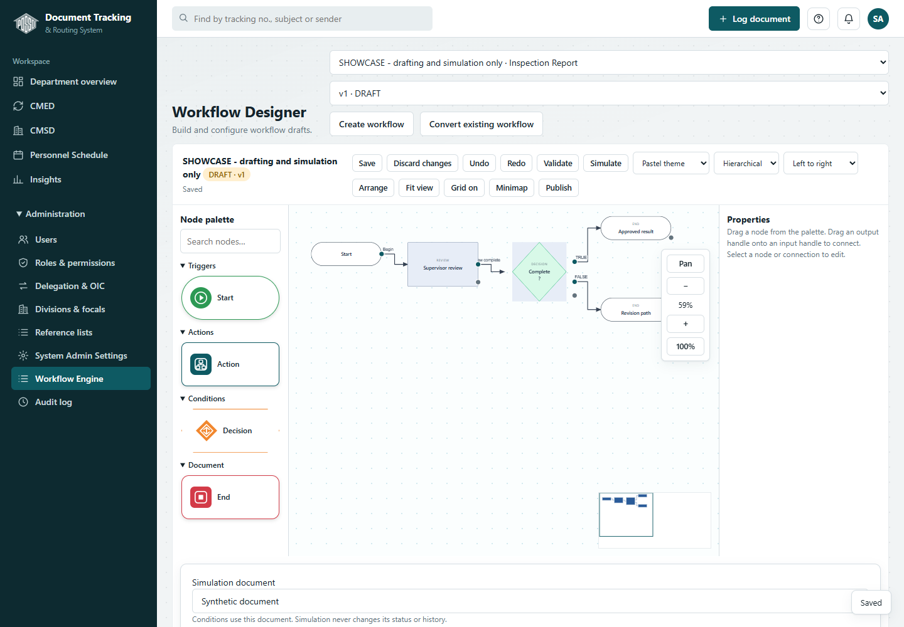
S29 · REFERENCE STILL AND PLANNED EDITORIAL OVERLAYDraft validate publish at simulate
Workflow Designer at simulationSystem Administrator#/workflow
Caption area · lower 17 percent · do not place essential controls here
- S29-1 Open a prepared draft with Start, Action, Decision and End; show properties and connector labels.
- S29-2 Show Arrange, fit, zoom, minimap, undo/redo, save state and a version selector.
- S29-3 Run validation and read-only simulation; place a visible current-scope label beside the result.
Label the scene Designer and simulation. Do not animate a notification node as if it actually sends email or changes live assignments.
Taglish narration and matching cues
S29-1 May visual Workflow Designer para gumawa at mag-review ng workflow definitions. Puwedeng maglagay ng Start, Action, Decision at End, ayusin ang connectors, labels, properties at layout, at mag-save ng draft.
S29-2 May validation, versioning, publish at simulation. Sa simulation, puwedeng gumamit ng sample document at makita ang branch path at candidate responsibility nang hindi binabago ang actual document workflow.
S29-3 Sa current version, ang designer ay para sa drafting, publishing at simulation. Ang live document actions ay gumagamit pa rin ng existing operational engine; hindi pa enabled ang generic designer execution. Kaya huwag nating sabihing automatic nang magro-route ang documents dahil lang na-publish ang diagram.
S30 / 29:00-30:00 / Operations
Security deployment at practical boundaries
 S30 · REFERENCE STILL AND PLANNED EDITORIAL OVERLAY
S30 · REFERENCE STILL AND PLANNED EDITORIAL OVERLAYServer checked actions at controlled deployment
Security deployment at practical boundariesPresenterSign-in / settings / architecture visual
Caption area · lower 17 percent · do not place essential controls here
- S30-1 Use a simple labelled browser-to-server diagram, not an invented cloud integration dashboard.
- S30-2 Show security controls conceptually without exposing keys, cookies or stored hashes.
- S30-3 Present three current boundaries as small factual labels beside real screen captures.
Avoid absolute claims such as impossible to hack, fully compliant or encrypted file storage. Session and permission controls do not establish blanket division confidentiality.
Taglish narration and matching cues
S30-1 Sa operational side, server-checked ang sign-in at action permissions. May hashed password storage, protected session cookie, failed-login throttling at configurable inactivity timeout. Ang account deactivation at password reset ay may session effects.
S30-2 Para sa real deployment, kailangan ang HTTPS at maayos na server access at backup setup. Ang staff ay bumubukas ng browser sa approved DTS address; ang shared database ay nasa server.
S30-3 May malinaw ding current boundaries: external file links ang ginagamit, walang direct binary upload, walang built-in email reminder service, at hindi parallel workflow execution ang kasalukuyang operational flow. Ang mga ito ay planning considerations, hindi features na dapat idagdag sa demonstration graphics.
S31 / 30:00-31:00 / Operations
Performance proof gamit ang stress test
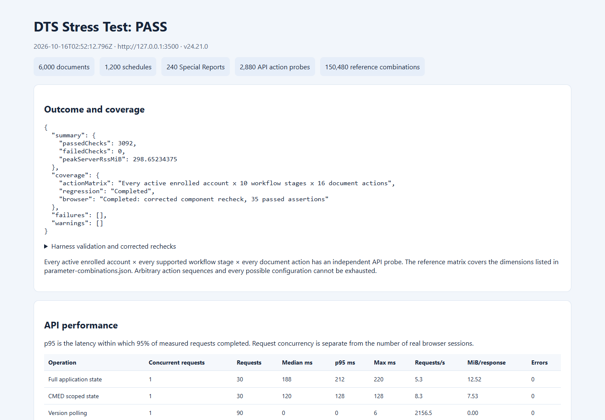
S31 · REFERENCE STILL AND PLANNED EDITORIAL OVERLAY6000 documents at measured results
Performance proof gamit ang stress testPresenter and stress-test operatorPort 3500 / saved report.html
Caption area · lower 17 percent · do not place essential controls here
- S31-1 Open the saved PASS report; show the dated dataset and account count.
- S31-2 Show the action-matrix and reference-combination totals plus maintained-suite results.
- S31-3 Highlight the 30-request p95 row, zero errors, resource figures and original-data comparison.
p95 is not average or per-user screen time. Distinguish 30 concurrent requests from six concurrent enrolled-role browser sessions. Earlier development latency reached 3.37 seconds.
Taglish narration and matching cues
S31-1 May hiwalay tayong stress-test launcher para makita ang behavior ng DTS sa mas maraming records. Sa verified run noong October sixteen, twenty twenty-six, may six thousand documents, twelve hundred schedules at two hundred forty-one Special Reports pagkatapos ng scenario checks.
S31-2 Kasama ang eighteen enrolled accounts, two thousand eight hundred eighty account-stage-action probes at one hundred fifty thousand four hundred eighty reference combinations. Pumasa rin ang twenty-four maintained regression suites.
S31-3 Sa thirty concurrent full-state requests, ang measured p95 latency ay about two point nine seconds, with zero HTTP errors sa load measurements. Resulta ito sa tested machine at workload, hindi guarantee ng unlimited capacity. Ipakita ang dated report at actual measurements para malinaw ang context.
S32 / 31:00-32:00 / Closing
Recap at guided staff practice
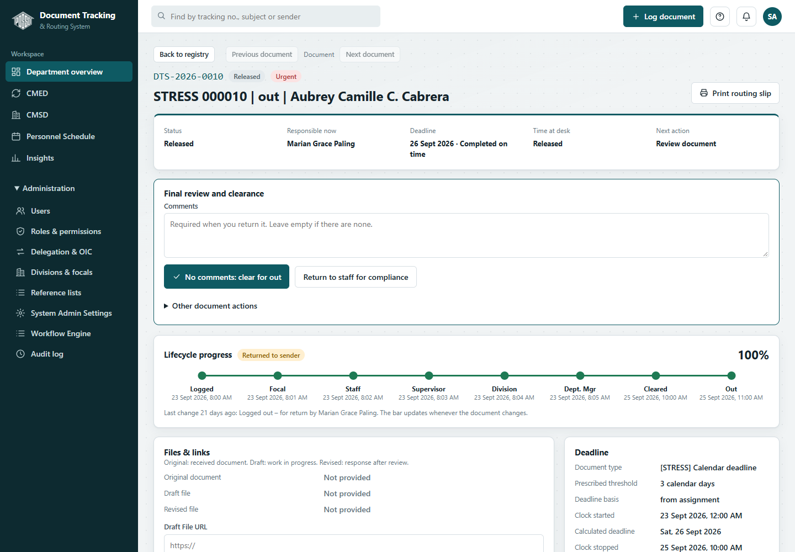
S32 · REFERENCE STILL AND PLANNED EDITORIAL OVERLAYMag-practice gamit ang tamang account
Recap at guided staff practicePresenter#/dashboard and #/action
Caption area · lower 17 percent · do not place essential controls here
- S32-1 Return to the same hero record now released; show a concise chronological path.
- S32-2 Show the role-based practice checklist and the test-environment label.
- S32-3 Hold a simple closing frame with the proposed next activity; leave space for questions.
Leave the CTA actionable and internal. Do not invent deployment dates, sponsor endorsements or a public support contact.
Taglish narration and matching cues
S32-1 Balikan natin ang ordinary flow: log, forward, assign, process, review, comply kung kailangan, clear at release. Sa bawat step, may current responsibility at history na puwedeng balikan.
S32-2 Para sa daily work, magsimula sa My work, i-check ang deadline at instructions, panatilihing tama ang file links, at magbigay ng malinaw na comments o compliance response. Para sa monitoring, gamitin ang filters at drilldowns bago magbigay ng conclusion.
S32-3 Ang susunod nating activity ay isang guided practice sa approved test environment. Bawat role ay gagawa ng sariling step sa isang sample document. Pagkatapos, i-check natin kung tugma ang final status, recipient at movement history. Mula rito, puwede nang pag-usapan ang rollout questions at actual office procedures.
Seam map
Keep the hero tracking number visible through S07-S14. Use a completed result as the bridge into the next scene. Use brief title transitions only between Orientation, Finding work, Lifecycle, Reports, Scheduling, Monitoring, Administration, Operations and Closing.
Hold the clearance state in S12 before showing the separate release in S14. Keep the current-scope label on Workflow Designer in S29 and the date and workload labels on performance proof in S31.
Visual tokens and capture rules
Teal #0E5A63Sidebar #0D2A30Paper #F1F4F5White cards
Use authentic DTS recordings, local fonts and readable crops. No invented upload buttons, email automation, parallel approvals, signatures or designer execution. No passwords, cookies, private backup contents or unlabelled production mutations.